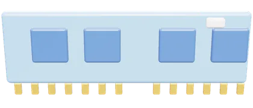
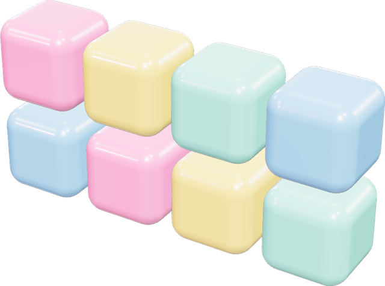
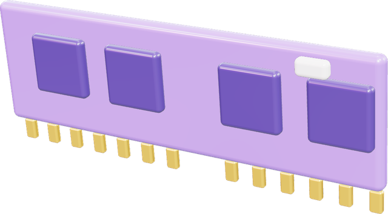
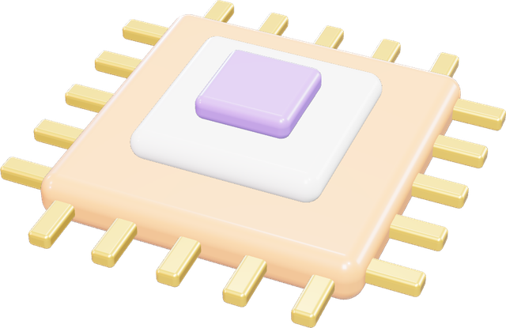
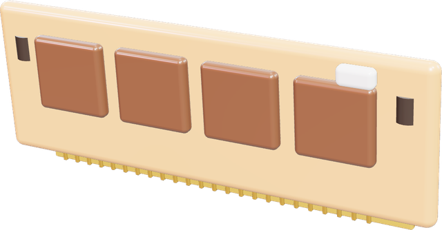
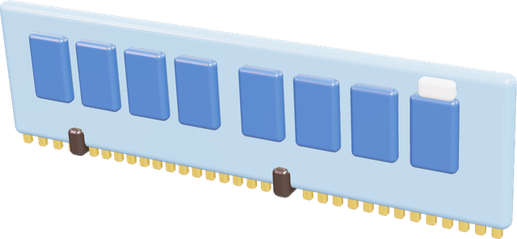

Memori adalah wadah, tempat, atau ruang penyimpanan di dalam sistem komputer untuk menyimpan data, program, dan instruksi yang dibutuhkan oleh komputer.
Sebelum diolah oleh otak komputer (CPU atau prosesor), data tersebut wajib mampir dan ditaruh dulu di dalam memori ini. Tanpa memori, prosesor tidak punya ruang gerak untuk mengerjakan apa pun.

Geser untuk memutar 360°
Macam-macam Memory
Memori disusun berjenjang. Makin dekat dengan prosesor, makin cepat tetapi makin kecil kapasitasnya.

Register Memory
Ini adalah memori kasta tertinggi soal kecepatan karena letaknya menempel langsung di dalam chip CPU atau prosesor. Kapasitasnya hanya cukup menampung beberapa bit atau byte data, tetapi aksesnya langsung tanpa jeda. Murni untuk memegang data atau alamat instruksi yang detik itu juga lagi dihitung oleh prosesor. Contohnya Instruction Register atau Memory Address Register.
Kecepatan
Kapasitas

Cache Memory
Posisinya ada di tengah-tengah, menjembatani antara CPU yang kerjanya super cepat dengan memori utama yang lebih lambat. Cache menyimpan salinan data yang paling sering dicari oleh CPU, jadi prosesor tidak perlu mengambil data ke memori utama sehingga kinerja komputer jauh lebih mulus.
Kecepatan
Kapasitas

Memori Utama
Memori utama dipakai untuk menyimpan data dan program aktif. Memori ini dibagi menjadi dua jenis.
Kecepatan
Kapasitas
a) RAM (Random Access Memory)
Tempat naruh aplikasi yang lagi dibuka. Sifatnya sementara sehingga begitu aliran listrik mati atau komputer restart, semua data hilang.

b) ROM (Read Only Memory)
Memori yang sifatnya permanen dan isinya sudah ditanam dari pabrik. Data di sini tidak akan hilang walau listrik mati, karena tugasnya menyimpan program dasar seperti BIOS untuk membangunkan semua komponen komputer saat pertama kali tombol power dinyalakan.

Sekunder Memory
Kecepatannya paling lambat dibandingkan tiga memori di atas, tetapi kapasitasnya besar sekali dengan harga yang mudah dijangkau. Data yang disimpan akan tetap aman meskipun komputer dimatikan. Contohnya Hard Disk, SSD, dan flashdisk yang sering dipakai sehari-hari.
Kecepatan
Kapasitas
Evolusi Memori
Ikuti rute dari generasi pertama sampai sekarang. Klik pin untuk membaca penjelasannya.
Evolusi Memori
Pilih satu kotak untuk membaca generasinya
Belum ada yang dipilih. Klik salah satu pin di peta untuk membaca generasinya.
Generasi Pertama
Era Tabung Vakum1940-an – awal 1950-an
Di masa awal komputer modern seperti ENIAC dan mesin IAS rancangan John von Neumann, sistem penyimpanan datanya masih mengandalkan komponen tabung hampa udara (vacuum tubes) dan sirkuit delay line. Secara fisik, memori di era ini ukurannya raksasa, gampang panas, boros listrik, dan sering rusak. Padahal kapasitas penyimpanannya cuma sanggup menampung hitungan ratusan hingga ribuan word data saja.
Generasi Kedua
Era Transistor dan Magnetic Core Memorypertengahan 1950-an – 1960-an
Teknologi penyimpanan bergeser ke memori inti magnetik (magnetic core memory). Bentuknya berupa ribuan cincin magnet super kecil yang dirajut dengan kawat halus, di mana arah medan magnet pada tiap cincin mewakili nilai biner 0 atau 1. Inovasi ini jadi lompatan besar karena ukurannya jauh lebih ringkas, akses datanya lebih cepat, dan sifatnya permanen sehingga data tidak hilang saat listrik mati.
Generasi Ketiga
IC dan Lahirnya Chip Semikonduktorakhir 1960-an – 1970-an
Penemuan Integrated Circuit (IC) bikin komponen elektronik bisa dipadatkan ke dalam kepingan silikon kecil. Pada tahun 1970, Fairchild dan Intel mulai memperkenalkan chip memori semikonduktor komersial pertama (seperti Intel 1103) yang langsung menggeser dominasi magnetic core memory. Di era inilah konsep memori utama modern mulai terbentuk melalui chip RAM (baik SRAM maupun DRAM) dan ROM yang kapasitasnya sudah bisa terus dilipatgandakan mengikuti hukum Moore (Moore's Law).
Generasi Keempat
Sinkronisasi, Cache, dan Keluarga DDR1980-an – sekarang
Seiring munculnya mikroprosesor yang kecepatannya melesat tajam, muncul masalah klasik bernama processor-memory speed mismatch (kecepatan memori jauh tertinggal dibanding kecepatan prosesor). Untuk mengatasinya, arsitektur memori berevolusi ke dua arah, yaitu:
Penambahan hierarki cache. Menanamkan memori berkecepatan super tinggi (SRAM) langsung di dalam kepingan chip prosesor (L1, L2, L3 cache) sebagai jembatan data instan.
Evolusi DRAM berkecepatan tinggi. Memori utama berkembang dari model asinkron lawas (seperti FPM dan EDO RAM) menuju SDRAM yang bekerja disinkronkan dengan detak (clock) sistem, lalu berevolusi ke keluarga DDR SDRAM (Double Data Rate) yang mampu mentransfer data dua kali lipat dalam satu siklus clock dengan tegangan listrik yang makin irit.
EDO, SDRAM, dan DDR SDRAM

Pertengahan 1990-an
EDO RAM
Extended Data Out RAM bekerja secara asinkron, artinya tidak mengikuti detak clock sistem. Keunggulannya, chip tidak mematikan keluaran data saat sinyal CAS naik, sehingga data berikutnya sudah bisa mulai diambil sebelum data sebelumnya selesai dikirim. Akses data jadi sekitar 40% lebih cepat dibanding pendahulunya, FPM RAM. Modulnya berupa SIMM 72 pin, umumnya bertegangan 5 volt.

Akhir 1990-an
SDRAM
Synchronous DRAM bekerja selaras dengan clock sistem, sehingga prosesor tahu persis kapan data siap dan perintah bisa disusun berurutan (pipelining). SDRAM mengirim satu data setiap siklus clock, sedangkan EDO butuh dua sampai tiga siklus per data. Modulnya DIMM 168 pin dengan tegangan 3,3 volt dan tersedia dalam PC66, PC100, dan PC133.
Awal 2000-an
DDR SDRAM
Double Data Rate SDRAM mentransfer data pada tepi naik dan tepi turun sinyal clock, sehingga dalam satu siklus ada dua kali transfer tanpa menaikkan frekuensi clock. Modulnya DIMM 184 pin dengan tegangan 2,5 volt yang lebih irit, dan tersedia dalam DDR-200 sampai DDR-400 (PC-1600 sampai PC-3200).
bit-tech. (n.d.). The secrets of PC memory, part 3: The first generation, DDR1. https://bit-tech.net/reviews/tech/memory/the_secrets_of_pc_memory_part_3/2/